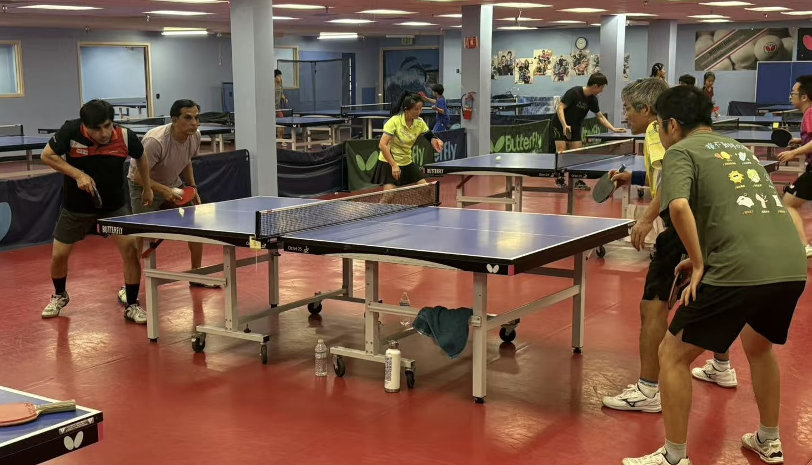
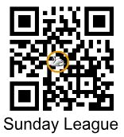
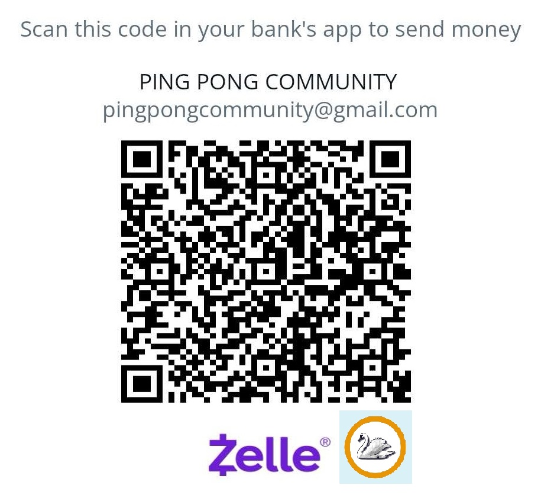
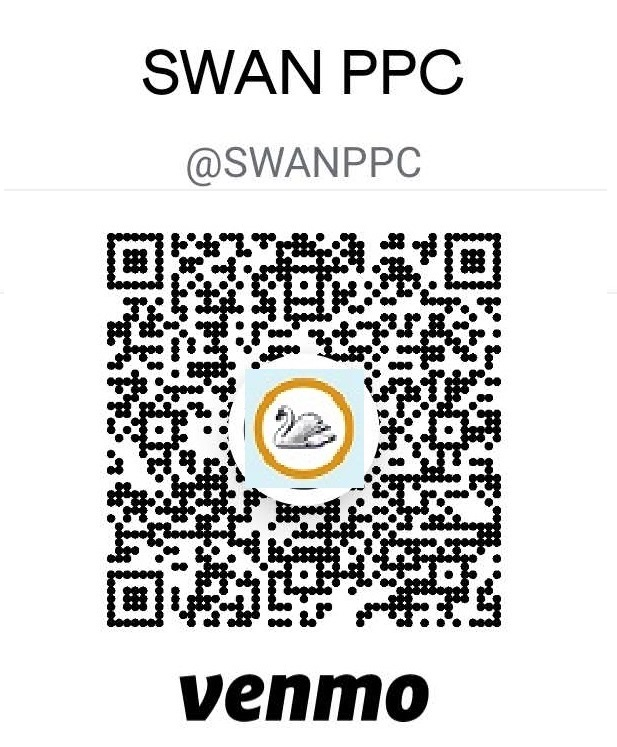

League
Time
Every Sunday starting from 2:00pm ~ 5:00pm
Account and signup
Participants need to register and establish a League Account using the following link. In addition, after registration and approval, player can sign-up for a Sunday League from the event calendar.
League website (click or scan 👉):

Please see the website for League sign up and League account registration.
- Our league name in USATT is "Swan Sunday League".
If you have not played in our league since 2022, please choose “Become a member” to register a new league account. Note that our past league member info before 2022 is lost. You need to register a new league account to participate in Sunday League again.
- In addition, participant is required to be a minimum "Basic USATT member" to account for ranking report.
Fees
- $5 for Swan (Monthly/Annual) member Or Swan student < 15 years old.
- $12 for non-members
Payment Option:
Cash or scan one of the following to pay
|

|

|
Swan League 3-way tie breaker rules:
In Swan table tennis tournaments or Sunday Leagues, a three-way tie in a round-robin format is resolved by comparing the records of the tied players within the group of tied players, first by game ratios. If those don't break the tie, other methods are used, such as comparing USATT Ranking when signed up for the game or even drawing lots.
Here's a more detailed breakdown:
- Game Ratio (Within the Tied Group):
The first step is to examine the results of matches played only between the tied players by comparing the ratios of games won to games lost.
For example, if Player A won 6 games and lost 4, and Player B won 5 and lost 5, Player A would have a higher ratio.
- Head-to-Head Record (Within the Tied Group):
If the Game Ratio record doesn't resolve the tie, the next step is to compare Head-to-Head Record.
For example, if Player A beat Player B, and Player B beat Player C, and Player C beat Player A, then the next tiebreaker would be needed.
- USATT Ranking:
If Head-to-Head Record cannot resolve the tie, the player with the lowest USATT Ranking will break the tie and is considered winner within the group and allowed to be promoted in the next league group assignment.
- Other Methods:
Drawing of lots: If all else fails, a random method like drawing names or flipping a coin will be administered by Swan League Committee at the appropriate time (same day or through email or next league time)
Reference 👉
League 3-way tie breaker rules